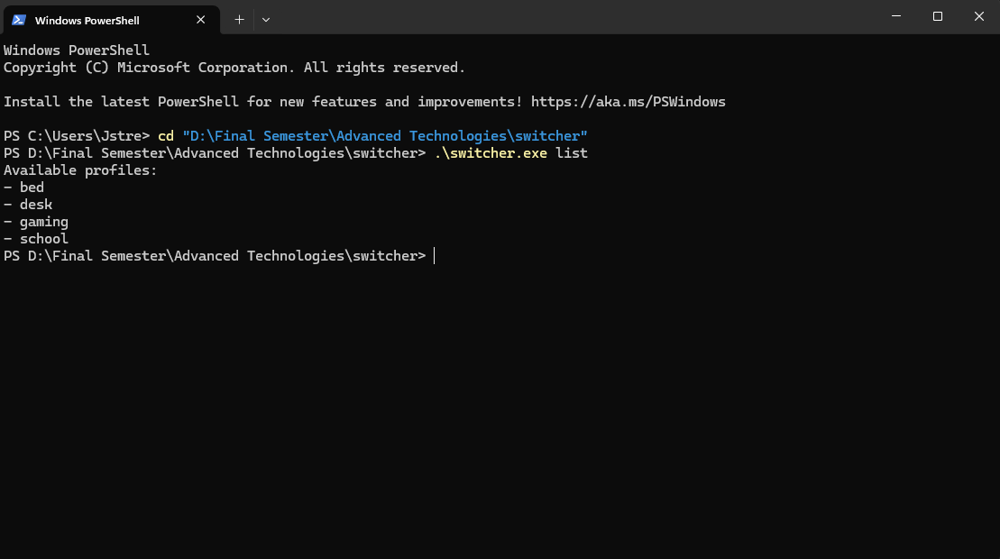
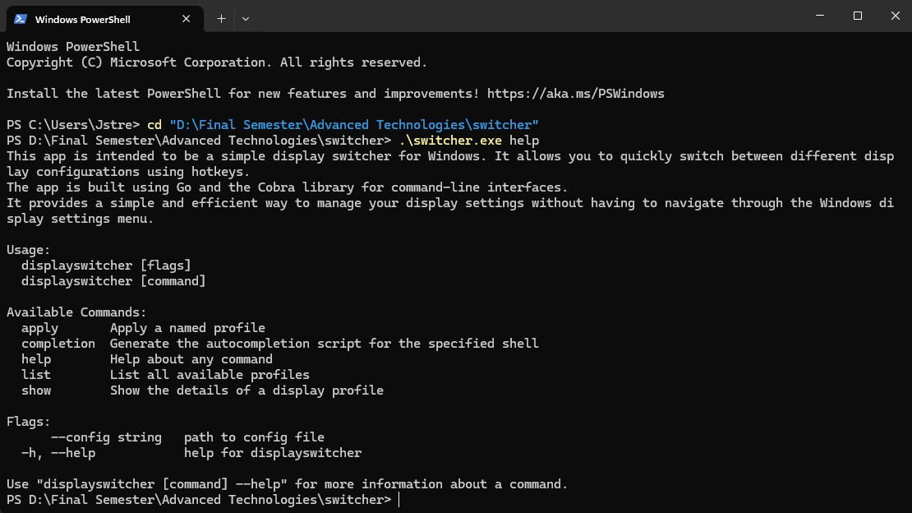
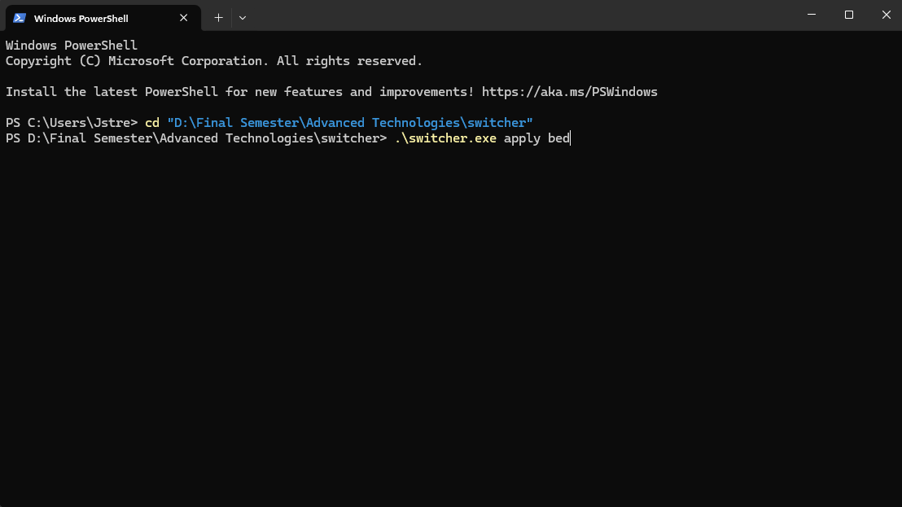

Display Switcher CLI is a Go command-line application created to quickly switch between different Windows monitor and workspace setups. The tool reads named profiles from a JSON configuration file and applies the actions assigned to each profile, such as loading a saved monitor configuration, disabling displays, launching desktop applications, or opening useful URLs.
The project was built as a practical automation tool for managing different computer setups. For example, one profile can restore a full desk layout with multiple monitors, while another profile can simplify the display setup for use from bed. Additional profiles can launch school-related apps, gaming apps, or frequently used websites after the display layout is applied.
displayswitcherconfig.json--config flag for using a custom config file pathlist commandshow commandapply command--dry-run flag to preview actions without executing themMultiMonitorTool.exeThis sample shows the configuration loading logic used by the CLI. The function reads a JSON file, parses it into Go structs, and returns a usable configuration object to the command files.
type Config struct {
Profiles map[string]Profile `json:"profiles"`
}
type Profile struct {
Actions []Action `json:"actions"`
}
type Action struct {
Type string `json:"type"`
Path string `json:"path,omitempty"`
}
func Load(path string) (Config, error) {
b, err := os.ReadFile(path)
if err != nil {
return Config{}, fmt.Errorf("read %q: %w", path, err)
}
var cfg Config
if err := json.Unmarshal(b, &cfg); err != nil {
return Config{}, fmt.Errorf("parse %q: %w", path, err)
}
if cfg.Profiles == nil {
cfg.Profiles = map[string]Profile{}
}
return cfg, nil
}This code represents the foundation of the tool. The CLI commands all depend on the same configuration structure, allowing the application to treat each profile as a named list of actions that can be listed, inspected, or executed.



View the project demo here! The demo video shows the CLI tool in action, applying different display and workspace. I cut out the section going through code, because I expose my montior ID.